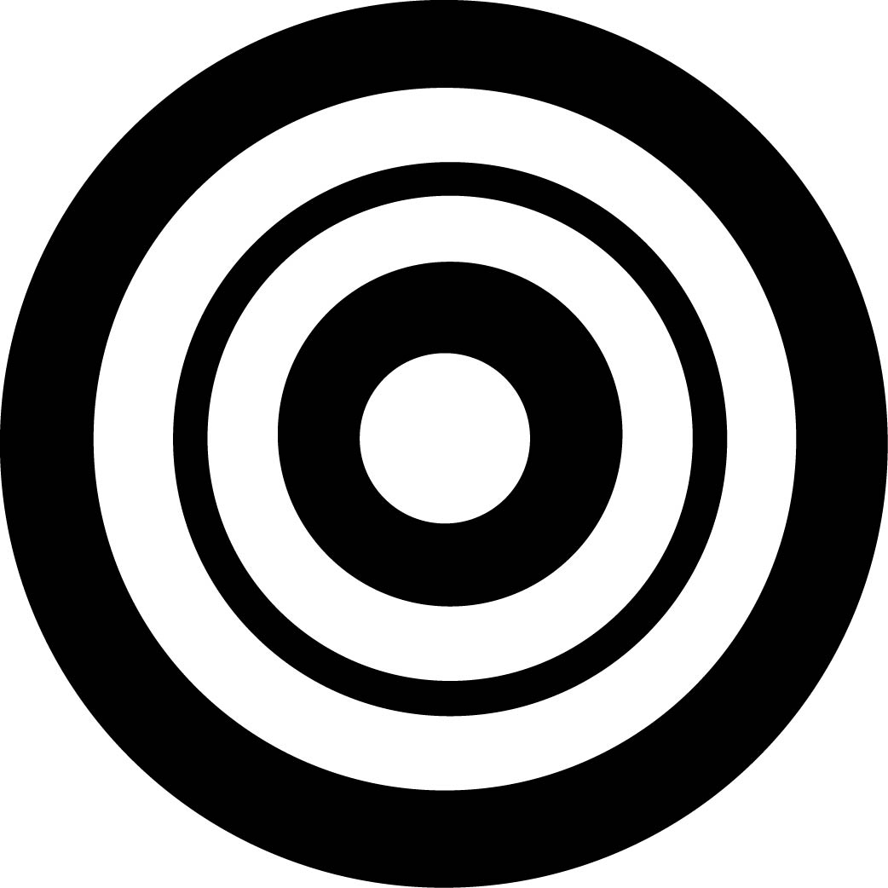
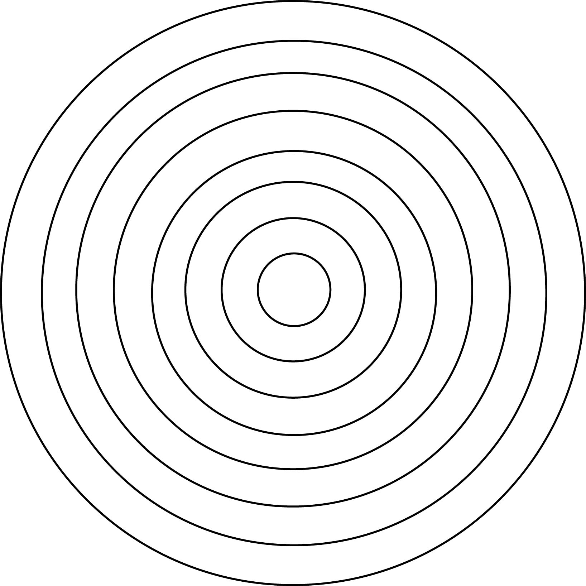
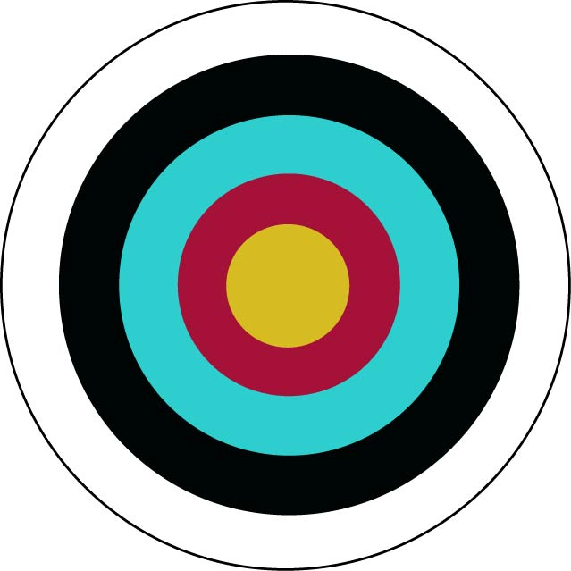

<!DOCTYPE html>
<html lang="ja">
<head>
    <meta http-equiv="Content-Type" content="text/html; charset=UTF-8">
    <title>これから始める弓道</title>
    <link rel="stylesheet" type="text/css" media="all" href="yumi.css" />
    <script type="text/javascript" src="menu.js"></script>

</head>
<body>
    <div id="page">
        <header></header>
        <section>
            <section id="co1">
                <ul class="pulldown_menu_7">

                    <li onclick="doToggleClassName(this,'menu_on','menu_off')">
                        <a href="index.html">入り</a>
                    </li>

                    <li onclick="doToggleClassName(this,'menu_on','menu_off')">
                        <a href="rekisi.html">弓道の歴史</a>
                    </li>

                    <li onclick="doToggleClassName(this,'menu_on','menu_off')">
                        <a>射法八節</a>
                        <ul>
                            <li><a href="syahou.html">射法八節</a></li>
                            <li><a href="syahou.html#asi">壱.足踏み</a></li>
                            <li><a href="syahou.html#dou">弐.胴作り</a></li>
                            <li><a href="syahou.html#yu">参.弓構え</a></li>
                            <li><a href="syahou.html#uti">肆.打ち起こし</a></li>
                            <li><a href="syahou.html#hiki">伍.引き分け</a></li>
                            <li><a href="syahou.html#kai">陸.会</a></li>
                            <li><a href="syahou.html#hanare">漆.離れ</a></li>
                            <li><a href="syahou.html#zann">捌.残心</a></li>
                        </ul>
                    </li>

                    <li onclick="doToggleClassName(this,'menu_on','menu_off')">
                        <a>道具</a>
                        <ul>
                            <li><a href="dougu.html">各種道具</a></li>
                            <li><a href="dougu.html#yumi">弓</a></li>
                            <li><a href="dougu.html#ya">矢</a></li>
                            <li><a href="dougu.html#yu">弓懸</a></li>
                            <li><a href="dougu.html#turu">弦</a></li>
                            <li><a href="dougu.html#hakama">胴着と袴</a></li>
                            <li><a href="dougu.html#obi">帯</a></li>
                            <li><a href="dougu.html#tabi">足袋</a></li>
                        </ul>
                    </li>

                    <li onclick="doToggleClassName(this,'menu_on','menu_off')">
                        <a>弓の世界</a>
                        <ul>
                            <li><a href="wayou.html">弓の世界</a></li>
                            <li><a href="wayou.html#atye">流鏑馬</a></li>
                            <li><a href="wayou.html#yabu">通し矢</a></li>

                        </ul>
                    </li>

                    <li onclick="doToggleClassName(this,'menu_on','menu_off')">
                        <a>審査</a>
                        <ul>
                            <li><a href="sinsa.html">段審査</a></li>
                            <li><a href="sinsa.html#naiyou">概要</a></li>
                            <li><a href="sinsa.html#pointo">注意点</a></li>
                            <li><a href="sinsa.html#touroku">登録料</a></li>

                        </ul>
                    </li>

                    <li onclick="doToggleClassName(this,'menu_on','menu_off')">
                        <a>悩める人</a>
                        <ul>
                            <li><a href="suranpu.html">悩める人へ</a></li>
                            <li><a href="suranpu.html#hayake">早気</a></li>
                            <li><a href="suranpu.html#motare">遅気</a></li>
                            <li><a href="suranpu.html#sonota">その他の悩み</a></li>

                        </ul>
                    </li>

                    <li onclick="doToggleClassName(this,'menu_on','menu_off')">
                        <a>試合</a>
                        <ul>
                            <li><a href="game.html">競技における弓道</a></li>
                            <li><a href="game.html#syumoku">競技種目</a></li>
                            <li><a href="game.html#houhou">競技方法</a></li>
                            <li><a href="game.html#mana">観戦マナー</a></li>
                        </ul>
                    </li>

                    <li onclick="doToggleClassName(this,'menu_on','menu_off')">
                        <a href="link.html">各種案内</a>
                    </li>
                </ul>
            </section>

            <section id="co2">

                <a name="pointo">
                    <h1 class="title">競技における弓道</h1>
                </a>
                <h4 class="expl">
                    今日の弓道は己を高める精神鍛錬だけでなく、スポーツとして相手と競い合い勝ち負けを決めるといった側面もあります。
                    また、試合形式にもいくつか種類があります。
                </h4>

                <a name="syumoku">
                    <h2 class="title">競技種目</h2>
                </a>
                <h4 class="expl">
                    競技種目はまず、個人戦と団体戦の二つがあります。また、的までの距離（射距離）によって「近的競技」と「遠的競技」
                    に分けられます。<br>
                    <ul>
                        <li>
                            <a>近的競技</a>
                            <ul>
                                <li>射距離・・・28m</li>
                                <li>的の直径・・・36cm（一尺二寸）</li>
                                <p><br />霞的</p>
                                一般的に弓道の試合と言うとこれを指します。学生弓道も基本的にこの形式で行われます。後述する的中制と
                                採点制があります。矢は近的競技用のものを用いります。一般的に店で販売されているのはこの近的用のもの
                                です。
                            </ul>
                        </li>
                        <br>
                        <li>
                            <a>遠的競技</a>
                            <ul>
                                <li>射距離・・・60m</li>
                                <li>的の直径・・・100cm</li>
                                <br />
                                後述する的中制と得点制があります。近的のものに比べて小さめの遠適競技用の矢を用いて行います。
                                近的用のものでもできますが、長い距離を飛ばすため空気抵抗を受けて上手く飛ばないことがあります。
                            </ul>
                        </li>
                    </ul>
                    <br>
                </h4>
                    <a name="houhou">
                        <h2 class="title">競技方法</h2>
                    </a>
                    <h4 class="expl">
                        競技方法は的中制、得点制、採点制の三つに分かれています。学生弓道は基本的に的中制で行われています。
                        <ul>
                            <li>
                                <a>的中制</a><br>
                                的中数（的に中った数）を競うものです。「あたり」と「はずれ」のみの判定で的のどこに的中しても
                                同じ「あたり」です。あたりの判定は以下の通りではずれはそれ以外です。
                                <ul>
                                    <li>一、標的に矢があたりとどまっている場合</li>
                                    <li>二、標的にあたった矢が標的を突き抜けた場合</li>
                                    <li>三、矢が折れた時、矢の根のある方が標的の内側にある場合</li>
                                    <li>四、矢が標的にあたっている矢にくいこんだ場合</li>
                                    <li>五、矢が的枠の合わせ目または的枠に立った場合</li>
                                    <li>六、矢が的輪の内側から的枠の外に射ぬいた場合</li>
                                    <li>七、矢があたって標的が転びその矢が標的についている場合</li>
                                    <li>八、あたった矢が地面についている場合</li>
                                    <li>九、的面にあるはずれ矢を射てあたった場合</li>
                                </ul>
                                <br />
                                とはいえ、これらは別に覚え無くても大丈夫です。<br>
                                また、中った本数が同じ場合は、「射詰競射」か「遠近競射」によって勝敗を決めます。<br />
                                <br />
                                <ul>
                                    <li>
                                        <a>射詰競射</a>
                                        <ul>
                                            一人一射ずつ行い、最後まで中て続けた人が勝ちとなります。主に決勝戦などで優勝者を決めるのに
                                            用いられます。また、三人以上で始まり、一人が中てて他の人がはずした場合、人数や時間の関係で
                                            射詰を継続するか後述する遠近競射を行なうかに分かれます。団体戦の場合はメンバー全員で一射ず
                                            つ行い、その合計的中数で勝敗をつけます。
                                        </ul>
                                    </li>
                                    </br>
                                    <li>
                                        <a>遠近競射</a>
                                        <ul>
                                            参加者全員が同じ的に一人一射行い、的の中心に近い人から順位が付けられていきます。優勝決定以
                                            外の順位を決める時に行なわれます。的は一般的には直径36cm の霞的ですが、学生の場合は同じ大き
                                            さのものに細い線で同心円を多数描いた線的が使用されます。
                                            <br />
                                            
                                        </ul>
                                    </li>
                                </ul>
                            </li>
                            <br>
                            <li>
                                <a>得点制</a>
                                <ul>
                                    色的（得点的）を使用し、アーチェリーのように得点を競い合います。同点の場合は的中数で決めます。学生弓道
                                    ではあまりなじみの無いものです。国体（国民体育大会）の遠的競技や実業団の近的競技で行なわれています。
                                    <br />
                                    <p>白：3点<br />黒：5点<br />青：7点<br />赤：9点<br />黄：10点
                                </ul>
                            </li>
                            <br clear="left">
                            <br />
                            <li>
                                <a>採点制</a>
                                <ul>
                                    的中だけでなく、射形（弓を引いている時の姿勢、形）や態度などを統合して審査員が採点を行ないます。
                                    全日本弓道選手権（毎年9月に開催する弓道日本一を決める大会）で行なわれます。
                                </ul>
                            </li>
                        </ul>
                    </h4>
                

                <a name="mana">
                    <h2 class="title">試合を観戦するときのマナー</h2>
                </a>
                <h4 class="expl">
                    さて、マナーといわれても弓道なんだから静かに見ていれば良いのでは思いますね。確かにその通りです。選手たちは集中して
                    試合に臨んでいるので、それを妨げるような行為をしてはいけません。基本的に静かに見ていましょう。<br>
                    <br>
                    ところが、学生弓道だとこの限りではありません。学生弓道の試合風景は野球やサッカーのように騒がしいものです。社会人
                    弓道では矢が的に中っても何もありませんが、学生の場合、味方の矢が当たると応援席から掛け声を掛けます。この掛け声も
                    学校毎に異なり「よーーーーっし！」や「しゃあぁぁぁ！」の他にいくつか種類があります。<br>
                    <br>
                    高校生の大会などでは応援席からの掛け声で済みますが、大学の大会となるとさらにヒートアップします。<a href="https://www.youtube.com/watch?v=OOAWappBdkc">こちら
                    </a>を見ていただくと分かると思いますが、とにかく騒がしいし踊っちゃってますね（笑）。もちろんこれは極端な例ですが、
                    ここまでくると弓道と言っていいのか疑問になってきますね。<br>
                    <br>
                    個人的に大学弓道は中りが多く、個人的に見ていて飽きません。とはいえ、弓道初心者に大学弓道はあまり見せたくはありませんね。
                    大学弓道はあまりに例外すぎるので、出来れば社会人弓道を最初に見ておくほうが良いと思います。<br>
                    <br>
                    それと、選手が皆中（持っている矢が二本または四本全てが的に中ること。二本の場合一手皆中ともいう）の場合は、誰であっても
                    必ず拍手をしましょう。<br>
                    <br>
                    なぜ拍手するのかというと、単純に皆中することが難しく、またすばらしいことだからです。皆さんも皆中した時は必ず拍手して
                    もらえるので、他の人にも拍手してあげましょう。<br>
                    <br>
                    と、ここまで書いてきましたが、もちろん試合会場や形式、その他の事情によってこれらは変わってくるので、かならず先生方や
                    係りの人の指示に従いましょう。分からなかったらとりあえず周りの人に合わせるのが一番ですし、静かに見ている分には何も
                    言われません。<br>
                    <br />
                    マナーを守って楽しく観戦しましょう。
                </h4>
            </section>
        </section>
        <p class="source">
            出典・脚注<br />
            参考資料<br />
            ・『弓道 - Wikipedia』https://ja.wikipedia.org/wiki/%E5%BC%93%E9%81%93 (2016年7月アクセス)<br />
            ・『射詰 - Wikipedia』https://ja.wikipedia.org/wiki/%E5%B0%84%E8%A9%B0 (2016年7月アクセス)<br />
            ・『遠近競射 - Wikipedia』https://ja.wikipedia.org/wiki/%E9%81%A0%E8%BF%91%E7%AB%B6%E5%B0%84　(2016年7月アクセス)<br />
            動画URL<br />
            ・Saji's Collections:https://www.youtube.com/watch?v=OOAWappBdkc
        </p>
        <p class="dammy"></p>
    </div>
</body>
</html>